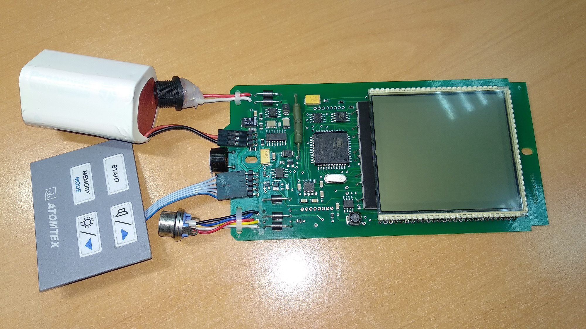
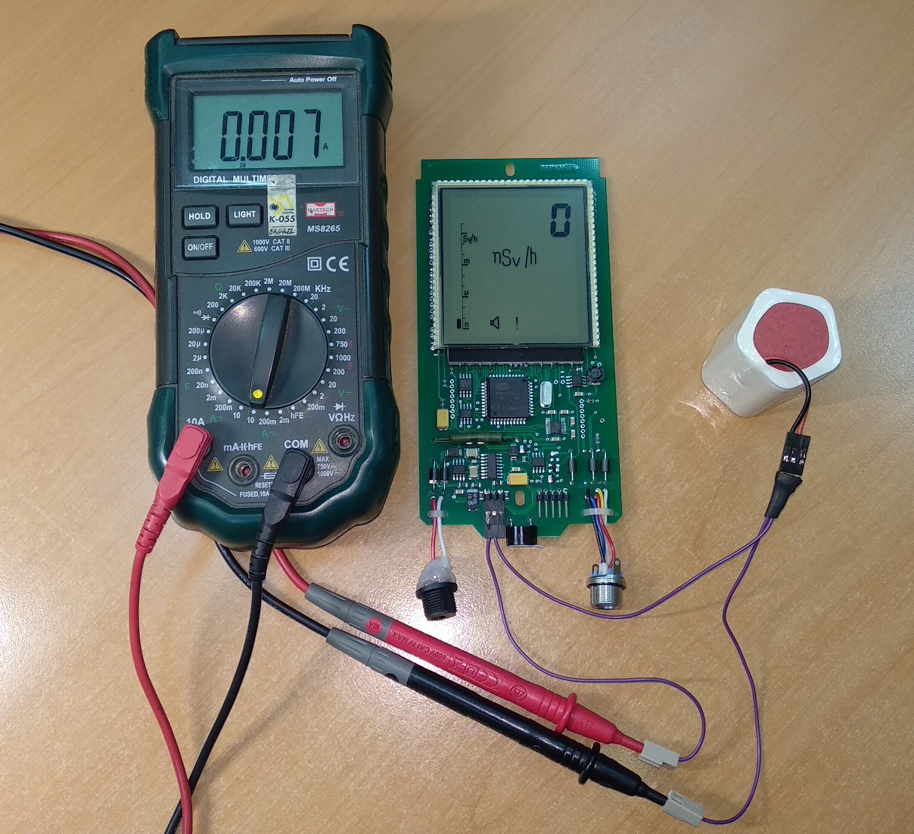
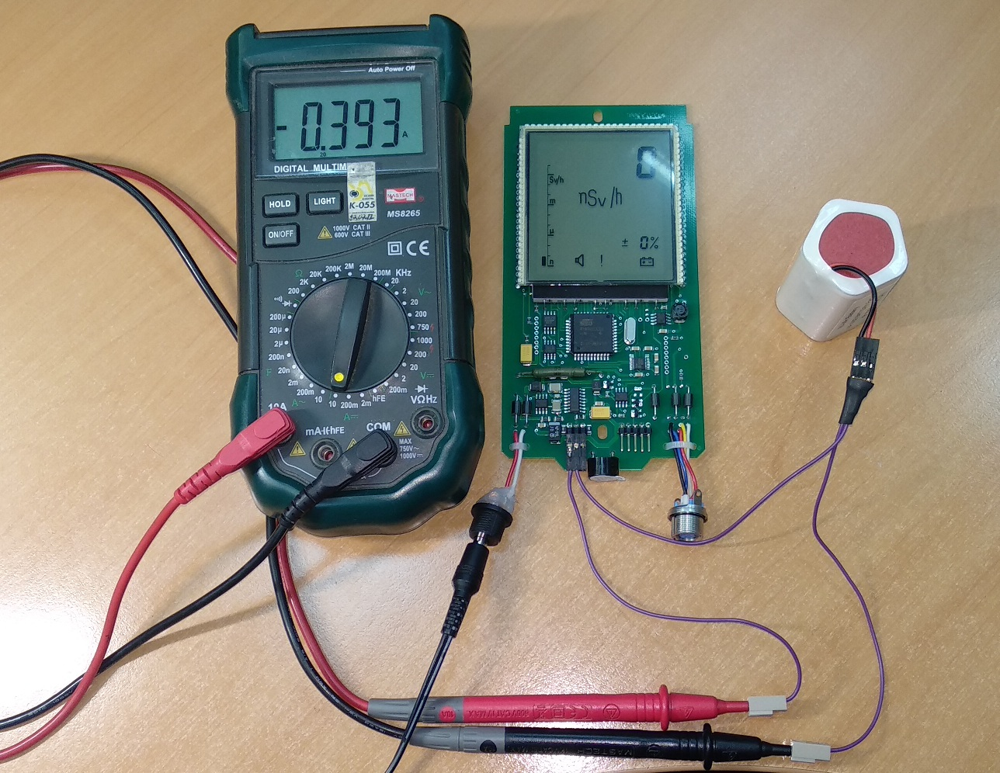
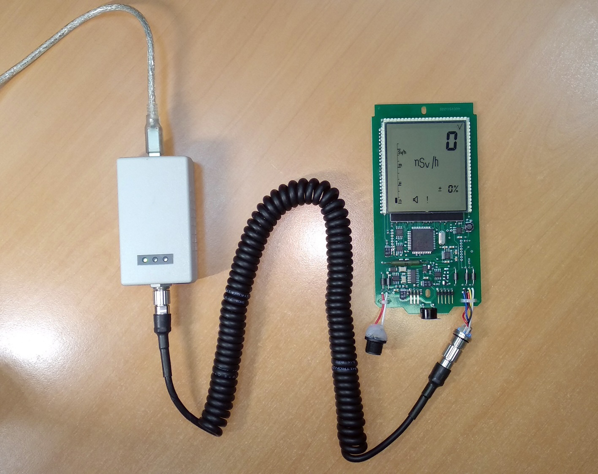
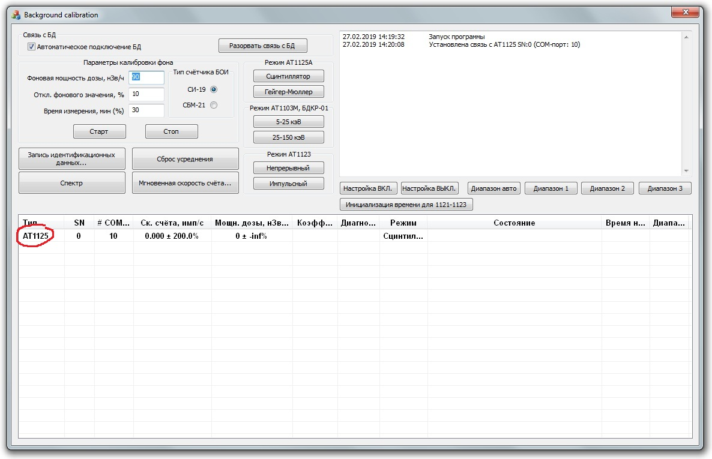

МКС-АТ1125, АТ1125А, ДКР-АТ1103М. Проверка платы УО.
-
Подключить технологическую АКБ и клавиатуру
 -
Ввести инициализацию 957.
После прошивке, при включении дозиметра на табло появляется мигающее сообщение «Err25», сопровождающиеся прерывистым звуковым сигналом (ошибка данных энергонезависимой памяти, означающая, что в данном случае в памяти ничего не записано из-за первого включения).
Это значит, что прибор не инициализирован. Для этого нужно:
- Включить прибор
- Нажать три раза , на экране появится "---":
- Два раза нажать кнопку
- Набрать "957", для этого с помощью клавиш и выбирается цифра, а спомощью выбирается следующая позиция
- После ввода последней цифры, нажать
- После инициализации прибор сам перезапустится и включится уже без ошибки

Также прибор можно инициировать с помощью ПО ATAS tech на ПК
-
Проверить ток потребления и ток заряда
Подключить мультиметр в разрыв питания АКБ: 
Включить прибор, замерить ток потребления, должен быть примерно 10 мА.
Подключить питиание 12 В от адаптера в DJK разъем: 
Замерить ток заряда, должен быть примерно 400 мА.
- При включении зажать клавишу ПОДСТВЕТКА — проверить наличие всех сегментов ЖКИ.
- Запустить двойную подсветку и проверить отсутствие мусора и темных пятен между подсветкой и ЖКИ.
- Поставить отметку маркером на защитной пленке ЖКИ об отсутствии царапин.
- Проверить управление: ПУСК, ПАМЯТЬ, ПОДСТВЕТКУ и ЗВУК.
-
Проверить обмен с БД.
Подключить УО к компьютеру через USB адаптер (АКБ можно не подключать, УО будет запитываться от адаптера): 
Запустить "Background Calibration". Плата должна определиться в нем, как "АТ1125" 